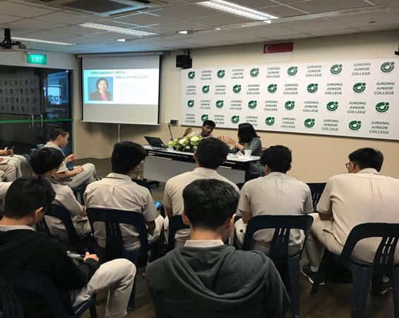

JPJC Alumni
The declining birth rate in Singapore and a corresponding decline in students entering post-secondary institutions has led to the merger of Jurong Junior College and Pioneer Junior College. This is to ensure that each JC can continue to provide a wide range of learning programmes and experiences for its students. The newly merged college was named Jurong Pioneer Junior College in 2018 to build upon the identities and strengths of both colleges. The alumni of both colleges will come together, working in partnership with the college to support the learning as well as development of our students.
Reconnect with us
For JJ and PJ alumni who wishes to reconnect with their ex-college mates and teachers, please refer to the following social media platform:
Jurong Junior College: https://www.facebook.com/JJAlumni/
Pioneer Junior College: https://www.facebook.com/PioneerAlumniCircle/
The college will be making announcements regarding the formation of JPJC Alumni soon, please watch this space.
Contributions
Many of JJ and PJ alumni, given their rich experience gained from varsity life and work experiences, would be a valuable resource to the college. Alumni can contribute in a great variety of ways, for example:
- Further Education and Career Guidance: Providing advice regarding university education and career guidance in terms of providing Industries Insights / Work Attachment Opportunities / Learning Journeys to corporations for our students.
- Volunteering Opportunities: Creating platforms for our students to organise VIA-related programmes so as to play a part to contribute to the community.
- Speaker’s Series: Establishing networks, through sharing of life experiences to motivate our students and providing further education and career guidance.
Please contact Ms Low Mei Xiu at mei_xiu_low@moe.edu.sg if you wish to contribute to JPJC.
Past Activities
The Alumni Breakfast Series is conducted on selected Thursday morning, it provides a platform for established alumni from a wide variety of fields to share their career and life experiences with their juniors. Students are able to benefit greatly through these networking sessions, which allowed for more personal and candid conversations. Alumni’s stories of resilience and triumph have resonated with the students. Participants of Alumni Breakfast Series then go on to share these insights with the rest of the college during morning assembly so as benefit the rest of the cohort.
In 2018, we were privileged to have alumni from various disciplines including research and academia, marine insurance, cloud computing, designing and marketing who give back to their alma mater and generously share their experiences with their juniors. We are honoured to have had the following alumni grace this series:-.
- Lim Yee Hwee (Scientist at Institute of Chemical and Engineering Services)
- Lay-Hui Lim (Head of Marine & Art Asia at Helvetia Swiss)Part
- Vincent Choy (Cloud Consultant for Office365 at Fedelis Sdn Bhd)
- Randy Chen (Principal at Zarch Collaboratives)
- Ang Jun Ting (Business Owner of Hai Sia Seafood) and Melvin Sim (Head of Marketing & Communications of Hai Sia Seafood)
Dr Lim Yee Hwee talking to a group of students after her sharing session
Question and Answer session with Ms Lay-Hui Lim
Homecoming Events
Curtain Call: Our Final Homecoming
Class of 1982 Reunion Lunch
Past VS Present
The college also takes pride in the organising of Past VS Present, a line-up of sports pitting alumni against current students. Each year approximately 300 alumni and current students bonded through sports and games in this annual sports meet.
With the large variety of games on offer, including Touch Rugby, Basketball, Badminton, Captain’s Ball, Floorball, Futsal, Netball, Ultimate Frisbee and Volleyball, there was something for everyone as ex-students from past batches forged strong ties with their juniors and enjoyed a day of reminiscence.
A group of alumni and students playing Captain’s Ball
Alumni and students playing Frisbee
Alumni Spotlight
Public Service
Mr Ang Hin Kee
Member of Parliament for the Ang Mo Kio Group Representation Constituency
Mr Pritam Singh
Member of Parliament for Aljunied Group Representation Constituency
Mr Tung Siew Hoong
Managing Director (Fixed Income) at Government Investment Corporation
Prof Pey Kin Leong
Associate Provost, Undergraduate Studies & SUTD Academy
Ms Tricia Seow
Senior Lecturer at National Institute of Education
Mr Koh Hong Wee
Senior Lecturer at Singapore Polytechnic
Nr Ng Swee Hoe
F-16 Fighter Pilot at Republic of Singapore Air Force
Business, Banking and Finance
Ms Carmen Lee (Class of 1982)
Head of Research at OCBC Investment Research
Law
Mr Tan Chong Huat
Senior Partner and founding member of RHTLAW Taylor Wessing
Mr Noh Bin Abd Hamid
Lawyer at Just Law LLC
Mr Ian Ong
Lawyer at Allen & Overy
STEM-related field
Dr Lim Yee Hwee
Scientist at Institute of Chemical and Engineering Sciences, A*Star
Adjunct Assistant Professor at NTU Lee Kong Chian School of Medicine
Mr Daniel Tay
Head of Industry Development Group at A*Star
Dr Vincent Choy
Cloud Consultant for Microsoft Cloud Technology
Dr Goh Han Lin
Artificial Intelligence Research Scientist at Apple Inc
Logistics
Mr Dean Tan
Deputy Director (logistics) at JTC Corporation
Arts, Music and Media
Mr Desmond Tan
Artist at MediaCorp
Best Actor at 24th Star Awards Ceremony (2018)
Mr Chen Jiaming
Acclaimed songwriter and music producer
Mr Cai Yiren
Founder of TCR Music Station
Ms Lim Sheau Wian
President of Mus’Art Wind Orchestra
Business and Entreprenuers
Mr Shafie Shamsuddin
President and Chief Executive Officer at PT Trans Retail Indonesia
Mr Roderick Chia
Founder of rodVENTURE
Mr Loo Cheng Chuan & Ms Lee Bee Yee
Founders of Premiummall
Mr Zhou Wenhan Santhe Militiya
CEO Smart Walkie Talkie
Co-founder of 2359 Media
Mr Gary Ong & Mr Johnathan Wong
Founders of Mr Gentleman and 51 Label
Mr Wille Goh
Founder and Director of Gymkraft
Soldier of the Year
Mr Issac Tan Jun Song
Army NSF of the Year Award (2017)
Scholarship Holders
Ms Natasha Ann Lum
President’s Scholar
Mr Gary Wong
Recipient of Public Service Commission Scholarship (Open)
Ms Jacinth Chia
Recipient of Public Service Commission Scholarship (Local)
Mr Kok Khew Fai
Bryan Leong
Recipient of SAF Merit Scholarship (Overseas)
Mr Gan Wei Liang
Recipient of A*STAR Undergraduate Scholarship (Overseas)
Mr Victor Wan Teng Wei
Benedict Koo Wei Sheng
Recipient of SPRING Executive Development Scholarship (Local)
Mr Edwin Ong Jit Guan
Mr Toh Yong Sheng
Recipient of Singapore-Industry Scholarship (Local)
Mr Wang Ji Chen
Recipient of BCA-Arup Built Environment Undergraduate Scholarship
Ms Jaslyn Tan Jia Min
Ms Chan Lai Teng
Recipient of Healthcare Merit Award (Local)
Ms Tan Li Pei
Aw Yang Jie Ling
Ms Esther Tan Yu Bing
Ms Francina Ranjitha Fernando
Mr Lin Kui Bin
Ms Yee Jie Ying
Recipient of MOE Teaching Award (Local)